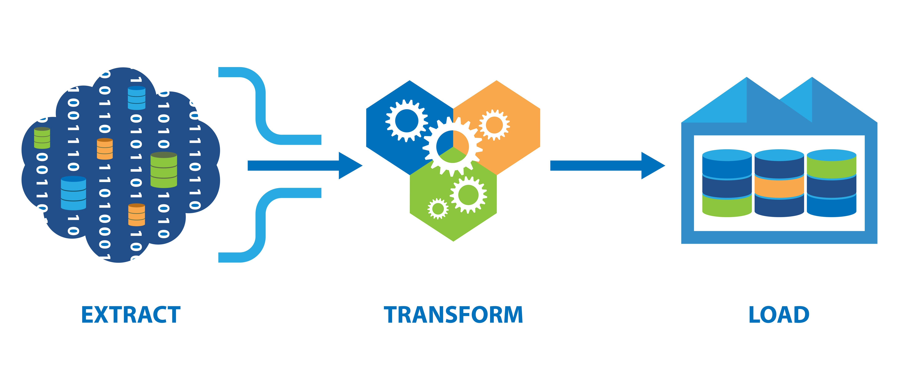

--- class: center, middle,green-background # Explora, Transforma, Logra ### ¡Desmitificando ETL en las vacantes de trabajo! --- # Agenda #### 1. Introducci√≥n a ETL #### 2. El Flujo de Datos en una Organizaci√≥n #### 3. Roles en el Mundo de los Datos #### 4. Ejemplo de ETL --- class: center, middle, green-background # Con qu√© puedo ayudar ? ### Un poco sobre mi. --- class: center, middle, green-background # Hesus Garc√≠a: DevOps Engineer <div style="text-align: center;"> <img src="https://github.com/HesusG/data-blog/blob/main/assets/Avatar.jpg?raw=true" alt="Foto de Hesus Garc√≠a" class="profile-pic"> </div> ### Analista de datos üöÄ con 5 a√±os de experiencia en consultor√≠a IT y análisis de datos. Ayudo a interpretar datos y elevar su calidad para mejorar la toma de decisiones. ‚úÖ <a href="TU_URL_DE_GITHUB" target="_blank" class="custom-link"><i class="fab fa-github"></i> GitHub</a> <a href="TU_URL_DE_LINKEDIN" target="_blank" class="custom-link"><i class="fab fa-linkedin"></i> LinkedIn</a> <a href="TU_SITIO_WEB_PERSONAL" target="_blank" class="custom-link"><i class="fas fa-globe"></i> Mi Sitio Web</a> --- class: center, middle, green-background # Introducci√≥n a ETL --- <div style="display: flex; align-items: flex-start;"> <div style="flex: 1;"> <h1>¬øQu√© es ETL?</h1> <p><strong>ETL</strong> es el acr√≥nimo de <strong>Extract, Transform, Load</strong> (Extraer, Transformar, Cargar). Estos tres procesos forman una cadena de pasos utilizada para mover datos desde una o más fuentes a un destino, como puede ser un data warehouse.</p> <ul> <li><strong>Extraer:</strong> Obtener datos de diversas fuentes.</li> <li><strong>Transformar:</strong> Limpiar y organizar los datos según las necesidades.</li> <li><strong>Cargar:</strong> Mover los datos transformados a su destino final.</li> </ul> </div> <div style="flex: 1; text-align: right;"><br><br><br><br><br><br><br><br>  </div> </div> --- # La Analog√≠a del Proceso de Ensamblaje en ETL Imagina el ETL como una **l√≠nea de ensamblaje** en una fábrica, donde: - **Extraer** equivale a seleccionar los recursos brutos necesarios. - **Transformar** es como construir y modificar esos recursos para crear un producto final. - **Cargar** representa entregar el producto terminado a su destino, listo para su uso o venta. As√≠ como un autom√≥vil necesita ser ensamblado antes de llegar al consumidor, los datos requieren un proceso de ETL antes de ser analizados o utilizados en la toma de decisiones. --- <div style="text-align: center;"> </div> --- # Ejemplo Práctico de ETL: Escenario Escolar Consideremos una **escuela** que necesita consolidar y analizar datos de diferentes fuentes para mejorar la gesti√≥n de cursos y el seguimiento de los alumnos: - Datos de inscripci√≥n de alumnos en diferentes cursos. - Informaci√≥n sobre el rendimiento acad√©mico y asistencia de los estudiantes. El objetivo es tener una visi√≥n integral que permita una mejor planificaci√≥n educativa y seguimiento del progreso estudiantil. --- # Detalle del Proceso ETL: Escenario Escolar En nuestro ejemplo de la escuela, el proceso ETL se desarrolla de la siguiente manera: 1. **Extraer:** Los datos se extraen de sistemas de gesti√≥n acad√©mica y plataformas de aprendizaje en l√≠nea, los cuales pueden estar en formatos diversos como bases de datos, hojas de cálculo o incluso informes en papel. 2. **Transformar:** Esta etapa convierte los datos extra√≠dos en un formato estandarizado. Por ejemplo, unificar los formatos de fecha, consolidar listas de alumnos inscritos y rendimiento acad√©mico en una estructura tabular coherente, y limpiar los datos de alumnos duplicados o incorrectos. 3. **Cargar:** Los datos transformados se cargan en un sistema centralizado, como una base de datos escolar, donde pueden ser accedidos para generar informes de rendimiento por curso, analizar tendencias de inscripci√≥n, y monitorear la asistencia y el progreso de los estudiantes. --- # ¡Sigan Adelante!  **¡Lo están haciendo incre√≠blemente bien!** Estamos aprendiendo juntos y avanzando paso a paso en el mundo de ETL. Recuerden, cada experta alguna vez fue principiante. Ahora, pongamos a prueba lo que hemos aprendido con un par de preguntas: --- ## ¬øQu√© significa ETL? ### A) Extraer, Transformar, Listar ### B) Entrar, Tocar, Leer ### C) Extraer, Transformar, Cargar ### D) Enviar, Traducir, Lanzar Pueden responder usando el chat de zoom. Recuerden seleccionar la opci√≥n que consideren correcta. **¡Estamos aqu√≠ para aprender y crecer!** --- ## ¬øEn qu√© etapa del proceso ETL se limpian los datos? ### A) Extraer ### B) Transformar ### C) Cargar ### D) Ninguna de las anteriores Pueden responder usando el chat de zoom. Recuerden seleccionar la opci√≥n que consideren correcta. **¡Estamos aqu√≠ para aprender y crecer!** --- class: center, middle, green-background # Roles en el Mundo de los Datos ## Descubre qui√©n hace qu√© en el ecosistema de datos. --- # El Rol del Analista de Datos Responsables de interpretar los datos para ofrecer insights y recomendaciones accionables. Los analistas de datos son responsables de interpretar los datos para ofrecer insights y recomendaciones accionables. - **Habilidades:** Dominio de SQL para la extracci√≥n y manipulaci√≥n de datos, capacidad para realizar análisis estad√≠sticos avanzados y experiencia en visualizaci√≥n de datos para comunicar resultados de manera efectiva. - **Objetivo:** Ayudar a la organizaci√≥n a tomar decisiones informadas y estrat√©gicas basadas en datos s√≥lidos y análisis detallados. - **Herramientas:** Uso experto de herramientas como Power BI y Looker Studio para análisis y visualizaci√≥n de datos, as√≠ como Google BigQuery para el procesamiento de grandes volúmenes de datos. Los analistas de datos convierten los datos en historias que impulsan el cambio organizacional y facilitan la toma de decisiones informadas. --- # El Rol del Cient√≠fico de Datos Especialistas que utilizan m√©todos cient√≠ficos para modelar y entender complejos conjuntos de datos. - **Habilidades:** Programaci√≥n (Python/R), machine learning, estad√≠stica avanzada. - **Objetivo:** Crear modelos predictivos y algoritmos para extraer insights. - **Herramientas:** JupyterNotebook, TensorFlow, SciKit Learn. Los cient√≠ficos de datos buscan patrones y conexiones ocultas para predecir futuros comportamientos. --- # El Rol del Ingeniero de Datos Los ingenieros de datos son fundamentales en la construcci√≥n y mantenimiento de la infraestructura necesaria para el almacenamiento, procesamiento y análisis de grandes volúmenes de datos. - **Habilidades clave:** - Sistemas de bases de datos - ETL (Extract, Transform, Load) - Arquitectura de datos - **Objetivo principal:** - Garantizar que los datos sean accesibles y est√©n en un formato listo para ser analizado. - **Herramientas comunes:** - Hadoop - Spark - Kafka --- # Flujos de Datos y Pipelines Los ingenieros de datos crean y mantienen los flujos de datos y pipelines, esenciales para asegurar que los datos sean accesibles, confiables y listos para el análisis. Un **pipeline** en la ingenier√≠a de datos es: - Una serie de procesos automatizados. - Mueve y transforma datos desde su origen hasta un destino final para análisis o almacenamiento. - Fundamental para el manejo eficiente y ordenado de datos en ciencia de datos y la ingenier√≠a de datos. Esto permite un flujo constante de datos a trav√©s de diferentes etapas, facilitando el análisis y la toma de decisiones basadas en datos. --- # Diagrama de Skills en Data <div style="text-align: center;"> <img src="img/skills_diagram.png" alt="Placeholder para imagen: data skills" style="width: 800px;"> </div> --- ## Interacci√≥n del Analista de Datos con ETL Los analistas de datos desempe√±an roles variados en ETL, influenciados por: - **Madurez organizacional:** En firmas bien establecidas, se centran más en análisis. En startups, pueden abarcar todo el proceso ETL. - **Herramientas tecnol√≥gicas:** El stack tecnol√≥gico (ej., Google BigQuery, Airflow) determina su grado de implicaci√≥n t√©cnica. - **Objetivos del proyecto:** La complejidad dicta si su enfoque es más hacia la transformaci√≥n de datos o análisis puro. - **Colaboraci√≥n:** La interacci√≥n con equipos de ingenier√≠a o ciencia de datos puede ampliar su rol en la calidad de datos. --- class: center, middle, green-background # Un modelo ETL ## Un Vistazo desde la Trinchera del Análisis de Datos --- # Contexto Una empresa de educaci√≥n en l√≠nea busca optimizar sus servicios y ofertas educativas analizando el comportamiento de los usuarios, el rendimiento de los cursos, y las tendencias de inscripci√≥n. Utiliza un proceso ETL en Google BigQuery, SQL de BigQuery, Google Sheets, y Google Analytics, para alimentar dashboards en Looker Studio y Power BI, con replicaci√≥n en otros sistemas mediante Servicios Comunes de Windows. La compa√±√≠a gestiona datos de diversas fuentes: - **Google Analytics:** Datos del comportamiento de usuarios en el sitio y plataforma. - **Google Sheets:** Registro de campa√±as promocionales y inscripciones manuales. - **Moodle:** Como LMS, detalla actividades y progreso de los estudiantes. --- ## Fase de Extracci√≥n En esta fase, se recopilan datos de múltiples fuentes para prepararlos para su análisis: - **De Google Analytics:** Se utilizan las API de Google Analytics para extraer datos sobre las interacciones de los usuarios en la plataforma, como sesiones, duraci√≥n de visitas, páginas vistas, y conversiones. - **De Google Sheets:** Se aprovecha la integraci√≥n de Google BigQuery con Google Sheets para extraer datos de forma directa, capturando informaci√≥n sobre inscripciones en eventos especiales y campa√±as promocionales. - **De Moodle:** Se extraen datos completos sobre la participaci√≥n de los estudiantes, incluyendo detalles de actividades, resultados de exámenes, y progreso en los cursos, lo cual es crucial para entender el rendimiento de los cursos y la eficacia de los materiales didácticos. --- ## Fase de Transformaci√≥n En esta etapa cr√≠tica, los datos brutos se transforman en informaci√≥n valiosa mediante SQL de BigQuery: - **Limpieza de Datos:** Se normalizan formatos, se corrigen errores, y se eliminan duplicados para asegurar la calidad y la coherencia de los datos. - **Enriquecimiento de Datos:** Se combinan los datos de diferentes fuentes, como Google Analytics y Moodle, para obtener una visi√≥n hol√≠stica del comportamiento del usuario, desde la visita inicial hasta la inscripci√≥n en cursos y su progreso acad√©mico. - **Aggregaci√≥n:** Se calculan m√©tricas clave como las tasas de inscripci√≥n por curso, el promedio de duraci√≥n de las sesiones, la tasa de finalizaci√≥n de cursos, y la efectividad de las campa√±as promocionales, proporcionando insights cr√≠ticos para la toma de decisiones. --- # Diagrama de Arquitectura <div style="text-align: center;"> <img src="img/laboratoria_stack.png" alt="Placeholder para imagen: data skills" style="width: 1000px;"> </div> --- ## Fase de Carga ### Alimentaci√≥n de Dashboards - **Looker Studio:** Utiliza una conexi√≥n directa con BigQuery para visualizar las m√©tricas clave, facilitando al equipo de producto y educativo la comprensi√≥n del rendimiento de los cursos y el engagement de los estudiantes. - **Power BI:** Similarmente, Power BI se conecta a BigQuery para crear un dashboard dirigido al equipo de marketing y ventas, centrado en las m√©tricas de rendimiento de las campa√±as y las tasas de conversi√≥n. Este dashboard se replica o se carga en otro sistema para ampliar la accesibilidad empresarial, utilizando los Servicios Comunes de Windows para su integraci√≥n. --- ## Fase de Carga #### Integraci√≥n Financiera - Automatizar la replicaci√≥n del dashboard de Power BI a una **base de datos espec√≠fica del departamento de finanzas**. Esto permite un análisis financiero más detallado del rendimiento de los cursos y la efectividad de las campa√±as de marketing, facilitando la toma de decisiones basada en datos para presupuestos y asignaciones de recursos. #### Análisis Avanzado - Crear r√©plicas de las bases de datos en entornos dedicados a la **investigaci√≥n y el desarrollo** de modelos predictivos. Esto puede incluir la creaci√≥n de bases de datos para el análisis de tendencias a largo plazo, predicciones de inscripciones, y la optimizaci√≥n de estrategias de marketing y contenido educativo. - Estas bases de datos pueden ser dise√±adas para soportar análisis complejos, como **machine learning** y **miner√≠a de datos**, ofreciendo insights profundos y acciones recomendadas para mejorar la oferta educativa y la experiencia del usuario. --- # Herramientas Comunes Es importante destacar que ETL (Extract, Transform, Load) es más un concepto que una herramienta espec√≠fica - Low-Code - Google Cloud DataFlow (AWS Glue , Azure Data Factory) - Pentaho - DataStage - Herramientas de integraci√≥n como SSIS, ODI - Prográmaticas - Python - R - Airflow - dbt - Herramientas de integraci√≥n como SSIS, ODI (que soporten scripting) --- # Diagrama de Arquitectura <div style="text-align: center;"> <img src="img/laboratoria_stack.png" alt="Placeholder para imagen: data skills" style="width: 1000px;"> </div> --- class: center, middle, green-background # Preguntas ---